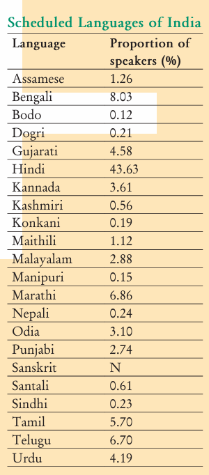

Chapter 2
Interactive Edition 2025
This chapter explores federalism, a key form of power-sharing in modern democracies where authority is divided among different levels of government. It explains the concept of federalism, its working in India, and how constitutional provisions and political practices have strengthened it over time. The chapter also discusses the emergence of local governments as the third tier, highlighting how decentralisation brings governance closer to the people and makes democracy more effective.
In the previous chapter, we noted that vertical division of power among different levels of government is one of the major forms of power-sharing in modern democracies. In this chapter, we focus on this form of power sharing. It is most commonly referred to as federalism. We begin by describing federalism in general terms. The rest of the chapter tries to understand the theory and practice of federalism in India. A discussion of the federal constitutional provisions is followed by an analysis of the policies and politics that has strengthened federalism in practice. Towards the end of the chapter, we turn to the local government, a new and third tier of Indian federalism.
Let us get back to the contrast between Belgium and Sri Lanka that we saw in the last chapter. You would recall that one of the key changes made in the Constitution of Belgium was to reduce the power of the Central Government and to give these powers to the regional governments. Regional governments existed in Belgium even earlier. They had their roles and powers. But all these powers were given to these governments and could be withdrawn by the Central Government. The change that took place in 1993 was that the regional governments were given constitutional powers that were no longer dependent on the central government. Thus, Belgium shifted from a unitary to a federal form of government. Sri Lanka continues to be, for all practical purposes, a unitary system where the national government has all the powers. Tamil leaders want Sri Lanka to become a federal system.
Federalism is a system of government in which the power is divided between a central authority and various constituent units of the country. Usually, a federation has two levels of government. One is the government for the entire country that is usually responsible for a few subjects of common national interest. The others are governments at the level of provinces or states that look after much of the day to-day administering of their state. Both these levels of governments enjoy their power independent of the other.In this sense, federations are contrasted with unitary governments. Under the unitary system, either there is only one level of government or the sub-units are subordinate to the central government. The central government can pass on orders to the provincial or the local government. But in a federal system, the central government cannot order the state government to do something. State government has powers of its own for which it is not answerable to the central government. Both these governments are separately answerable to the people.
Let us look at some of the key features of federalism :
1. There are two or more levels (or tiers) of government.
2. Different tiers of government govern the same citizens, but each tier has its own jurisdiction in specific matters of legislation, taxation and administration.
3. The jurisdictions of the respective levels or tiers of government are specified in the constitution. So the existence and authority of each tier of government is constitutionally guaranteed.
4. The fundamental provisions of the constitution cannot be unilaterally changed by one level of government. Such changes require the consent of both the levels of government.
5. Courts have the power to interpret the constitution and the powers of different levels of government. The highest court acts as an umpire if disputes arise between different levels of government in the exercise of their respective powers.
6. Sources of revenue for each level of government are clearly specified to ensure its financial autonomy.
7. The federal system thus has dual objectives: to safeguard and promote unity of the country, while at the same time accommodate regional diversity. Therefore, two aspects are crucial for the institutions and practice of federalism. Governments at different levels should agree to some rules of power-sharing. They should also trust that each would abide by its part of the agreement. An ideal federal system has both aspects : mutual trust and agreement to live together.
The exact balance of power between the central and the state government varies from one federation to another. This balance depends mainly on the historical context in which the federation was formed. There are two kinds of routes through which federations have been formed. The first route involves independent States coming together on their own to form a bigger unit, so that by pooling sovereignty and retaining identity, they can increase their security. This type of 'coming together' federations include the USA, Switzerland and Australia. In this first category of federations, all the constituent States usually have equal power and are strong vis-à-vis the federal government.
The second route is where a large country decides to divide its power between the constituent States and the national government. India, Spain and Belgium are examples of this kind of 'holding together' federations. In this second category, the Central Government tends to be more powerful vis-à-vis the States. Very often different constituent units of the federation have unequal powers. Some units are granted special powers.
We have earlier seen how small countries like Belgium and Sri Lanka face so many problems of managing diversity. What about a vast country like India, with so many languages, religions and regions? What are the power sharing arrangements in our country?
Let us begin with the Constitution. India had emerged as an independent nation after a painful and bloody partition. Soon after Independence, several princely states became a part of the country. The Constitution declared India as a Union of States. Although it did not use the word federation, the Indian Union is based on the principles of federalism.
Let us go back to the seven features of federalism mentioned above. We can see that all these features apply to the provisions of the Indian Constitution. The Constitution originally provided for a two-tier system of government, the Union Government or what we call the Central Government, representing the Union of India and the State governments. Later, a third tier of federalism was added in the form of Panchayats and Municipalities. As in any federation, these different tiers enjoy separate jurisdiction. The Constitution clearly provided a three-fold distribution of legislative powers between the Union Government and the State Governments. Thus, it contains three lists:
1. Union List includes subjects of national importance, such as defence of the country, foreign affairs, banking, communications and currency. They are included in this list because we need a uniform policy on these matters throughout the country. The Union Government alone can make laws relating to the subjects mentioned in the Union List.
2. State List contains subjects of State and local importance, such as police, trade, commerce, agriculture and irrigation. The State Governments alone can make laws relating to the subjects mentioned in the State List.
3. Concurrent List includes subjects of common interest to both the Union Government as well as the State Governments, such as education, forest, trade unions, marriage, adoption and succession. Both the Union as well as the State Governments can make laws on the subjects mentioned in this list. If their laws conflict with each other, the law made by the Union Government will prevail.
What about subjects that do not fall in any of the three lists? Or subjects like computer software that came up after the constitution was made? According to our constitution, the Union Government has the power to legislate on these 'residuary' subjects.
We noted above that most federations that are formed by 'holding together' do not give equal power to its constituent units. Thus, all States in the Indian Union do not have identical powers. Some States enjoy a special status. States such as Assam, Nagaland, Arunachal Pradesh and Mizoram enjoy special powers under certain provisions of the Constitution of India (Article 371) due to their peculiar social and historical circumstances. These special powers are especially enjoyed in relation to the protection of land rights of indigenous peoples, their culture and also preferential employment in government services. Indians who are not permanent residents of this State cannot buy land or house here. Similar special provisions exist for some other States of India as well.
There are some units of the Indian Union which enjoy very little power. These are areas which are too small to become an independent State but which could not be merged with any of the existing States. These areas, like Chandigarh, or Lakshadweep or the capital city of Delhi, are called Union Territories. These territories do not have the powers of a State. The Central Government has special powers in running these areas.
This sharing of power between the Union Government and the State Governments is basic to the structure of the Constitution. It is not easy to make changes to this power sharing arrangement. The Parliament cannot on its own change this arrangement. Any change to it has to be first passed by both the Houses of Parliament with at least two-thirds majority. Then it has to be ratified by the legislatures of at least half of the total States.
The judiciary plays an important role in overseeing the implementation of constitutional provisions and procedures. In case of any dispute about the division of powers, the High Courts and the Supreme Court make a decision. The Union and State Governments have the power to raise resources by levying taxes in order to carry on the government and the responsibilities assigned to each of them.
Constitutional provisions are necessary for the success of federalism but these are not sufficient. If the federal experiment has succeeded in India, it is not merely because of the clearly laid out constitutional provisions. The real success of federalism in India can be attributed to the nature of democratic politics in our country. This ensured that the spirit of federalism, respect for diversity and desire for living together became shared ideals in our country. Let us look at some of the major ways in which this happened.
The creation of linguistic States was the first and a major test for democratic politics in our country. If you look at the political map of India when it began its journey as a democracy in 1947 and that of 2019, you will be surprised by the extent of the changes. Many old States have vanished and many new States have been created. Areas, boundaries and names of the States have been changed.
In 1947, the boundaries of several old States of India were changed in order to create new States. This was done to ensure that people who spoke the same language lived in the same State. Some States were created not on the basis of language but to recognise differences based on culture, ethnicity or geography. These include States like Nagaland, Uttarakhand and Jharkhand.
When the demand for the formation of States on the basis of language was raised, some national leaders feared that it would lead to the disintegration of the country. The Central Government resisted linguistic States for some time. But the experience has shown that the formation of linguistic States has actually made the country more united. It has also made administration easier.
A second test for Indian federation is the language policy. Our Constitution did not give the status of national language to any one language. Hindi was identified as the official language. But Hindi is the mother tongue of only about 40 per cent of Indians. Therefore, there were many safeguards to protect other languages. Besides Hindi, there are 22 other languages recognised as Scheduled Languages by the Constitution.
A candidate in an examination conducted for the Central Government positions may opt to take the examination in any of these languages. States too have their own official languages. Much of the government work takes place in the official language of the concerned State.
Unlike Sri Lanka, the leaders of our country adopted a very cautious attitude in spreading the use of Hindi. According to the Constitution, the use of English for official purposes was to stop in 1965. However, many non-Hindi speaking States demanded that the use of English continue. In Tamil Nadu, this movement took a violent form. The Central Government responded by agreeing to continue the use of English along with Hindi for official purposes.
Many critics think that this solution favoured the English-speaking elite. Promotion of Hindi continues to be the official policy of the Government of India. Promotion does not mean that the Central Government can impose Hindi on States where people speak a different language. The flexibility shown by Indian political leaders helped our country avoid the kind of situation that Sri Lanka finds itself in.
Restructuring the Centre-State relations is one more way in which federalism has been strengthened in practice. How the constitutional arrangements for sharing power work in reality depends to a large extent on how the ruling parties and leaders follow these arrangements.
For a long time, the same party ruled both at the Centre and in most of the States. This meant that the State Governments did not exercise their rights as autonomous federal units. As and when the ruling party at the State level was different, the parties that ruled at the Centre tried to undermine the power of the States.
In those days, the Central Government would often misuse the Constitution to dismiss the State Governments that were controlled by rival parties. This undermined the spirit of federalism.
All this changed significantly after 1990. This period saw the rise of regional political parties in many States of the country. This was also the beginning of the era of coalition governments at the Centre. Since no single party got a clear majority in the Lok Sabha, the major national parties had to enter into an alliance with many parties including several regional parties to form a government at the Centre.
This led to a new culture of power sharing and respect for the autonomy of State Governments. This trend was supported by a major judgement of the Supreme Court that made it difficult for the Central Government to dismiss state governments in an arbitrary manner. Thus, federal power sharing is more effective today than it was in the early years after the Constitution came into force.
How many languages do we have in India? The answer depends on how one counts it. The latest information that we have is from the Census of India held in 2011. This census recorded more than 1300 distinct languages which people mentioned as their mother tongues. These languages were grouped together under some major languages.
For example, languages like Bhojpuri, Magadhi, Bundelkhandi, Chhattisgarhi, Rajasthani and many others were grouped together under 'Hindi'. Even after this grouping, the Census found 121 major languages. Of these, 22 languages are now included in the Eighth Schedule of the Indian Constitution and are therefore called 'Scheduled Languages'. Others are called 'non-Scheduled Languages'. In terms of languages, India is perhaps the most diverse country in the world.
A look at the enclosed table makes it clear that no one language is the mother tongue of the majority of our population. The largest language, Hindi, is the mother tongue of only about 44 per cent Indians. If we add to that all those who knew Hindi as their second or third language, the total number was still less than 50 per cent in 2011.
As for English, only 0.02 per cent Indians recorded it as their mother tongue. Another 11 per cent knew it as a second or third language.
We noted above that federal governments have two or more tiers of governments. We have so far discussed the two-tiers of government in our country. But a vast country like India cannot be run only through these two-tiers. States in India are as large as independent countries of Europe. In terms of population, Uttar Pradesh is bigger than Russia, Maharashtra is about as big as Germany. Many of these States are internally very diverse. There is thus a need for power sharing within these States.
Federal power sharing in India needs another tier of government, below that of the State governments. This is the rationale for decentralisation of power. Thus, resulted a third tier of government, called local government.
When power is taken away from Central and State governments and given to local government, it is called decentralisation. The basic idea behind decentralisation is that there are a large number of problems and issues which are best settled at the local level. People have better knowledge of problems in their localities. They also have better ideas on where to spend money and how to manage things more efficiently.
Besides, at the local level it is possible for the people to directly participate in decision making. This helps to inculcate a habit of democratic participation. Local government is the best way to realise one important principle of democracy, namely local self-government.
The need for decentralisation was recognised in our Constitution. Since then, there have been several attempts to decentralise power to the level of villages and towns. Panchayats in villages and municipalities in urban areas were set up in all the States. But these were directly under the control of state governments. Elections to these local governments were not held regularly. Local governments did not have any powers or resources of their own. Thus, there was very little decentralisation in effective terms.
A major step towards decentralisation was taken in 1992. The Constitution was amended to make the third-tier of democracy more powerful and effective.
a) Now it is constitutionally mandatory to hold regular elections to local government bodies.
b) Seats are reserved in the elected bodies and the executive heads of these institutions for the Scheduled Castes, Scheduled Tribes and Other Backward Classes.
c) At least one-third of all positions are reserved for women.
d) An independent institution called the State Election Commission has been created in each State to conduct panchayat and municipal elections.
e) The State governments are required to share some powers and revenue with local government bodies. The nature of sharing varies from State to State.
Rural local government is popularly known by the name panchayati raj. Each village, or a group of villages in some States, has a gram panchayat. This is a council consisting of several ward members, often called panch, and a president or sarpanch. They are directly elected by all the adult population living in that ward or village. It is the decision-making body for the entire village.
The panchayat works under the overall supervision of the gram sabha. All the voters in the village are its members. It has to meet at least twice or thrice in a year to approve the annual budget of the gram panchayat and to review the performance of the gram panchayat.
The local government structure goes right up to the district level. A few gram panchayats are grouped together to form what is usually called a panchayat samiti or block or mandal. The members of this representative body are elected by all the panchyat members in that area. All the panchayat samitis or mandals in a district together constitute the zilla (district) parishad.
Most members of the zilla parishad are elected. Members of the Lok Sabha and MLAs of that district and some other officials of other district level bodies are also its members. Zilla parishad chairperson is the political head of the zilla parishad.
Similarly, local government bodies exist for urban areas as well. Municipalities are set up in towns. Big cities are constituted into municipal corporations. Both municipalities and municipal corporations are controlled by elected bodies consisting of people's representatives. Municipal chairperson is the political head of the municipality. In a municipal corporation, such an officer is called the mayor.
An experiment in Brazil: A city called Porto Alegre in Brazil has carried out an extraordinary experiment in combining decentralisation with participative democracy. The city has set up a parallel organisation operating alongside the municipal council, enabling local inhabitants to take real decisions for their city. The nearly 13 lakh people in this city get to participate in making the budget for their own city.
The city is divided into many sectors or what we call wards. Each sector has a meeting, like that of the gram sabha, in which anyone living in that area can participate. There are some meetings to discuss issues that affect the entire city. Any citizen of the city can participate in those meetings. The budget of the city is discussed in these meetings. The proposals are put to the municipality that takes a final decision about it.
About 20,000 people participate in this decision making exercise every year. This method has ensured that the money cannot be spent only for the benefit of the colonies where rich people live. Buses now run to the poor colonies and builders cannot evict slum-dwellers without resettling them.
In our own country, a similar experiment has taken place in some areas in Kerala. Ordinary people have participated in making a plan for the development of their locality.
This new system of local government is the largest experiment in democracy conducted anywhere in the world. There are now about 36 lakh elected representatives in the panchayats and municipalities etc., all over the country. This number is bigger than the population of many countries in the world.
Constitutional status for local government has helped to deepen democracy in our country. It has also increased women's representation and voice in our democracy. At the same time, there are many difficulties. While elections are held regularly and enthusiastically, gram sabhas are not held regularly. Most state governments have not transferred significant powers to the local governments. Nor have they given adequate resources. We are thus still a long way from realising the ideal of self-government.
Answer the following questions to test your understanding of power sharing:
A. In a federation, the powers of the federal and provincial governments are clearly demarcated.
B. India is a federation because the powers of the Union and State Governments are specified in the Constitution and they have exclusive jurisdiction on their respective subjects.
C. Sri Lanka is a federation because the country is divided into provinces.
D. India is no longer a federation because some powers of the States have been devolved to the local government bodies.
Which of the statements given above are correct?
Match the items from List I with the correct items from List II:
Fill in the blanks with appropriate words:
Since the United States is a type of federation, all the constituent States have equal powers and States are vis-à-vis the federal government. But India is a type of federation and some States have more power than others. In India, the government has more powers.
Answer the following questions to develop your critical thinking about power sharing: